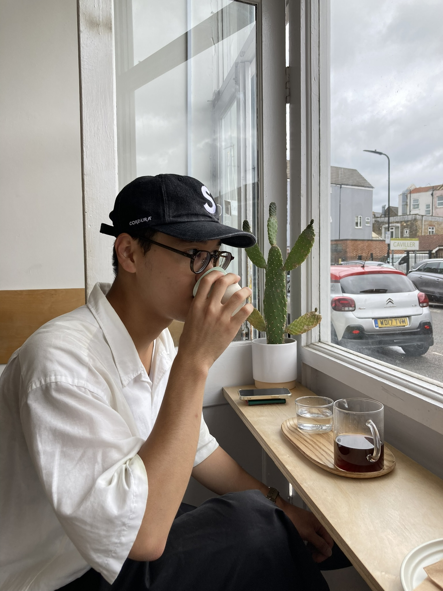
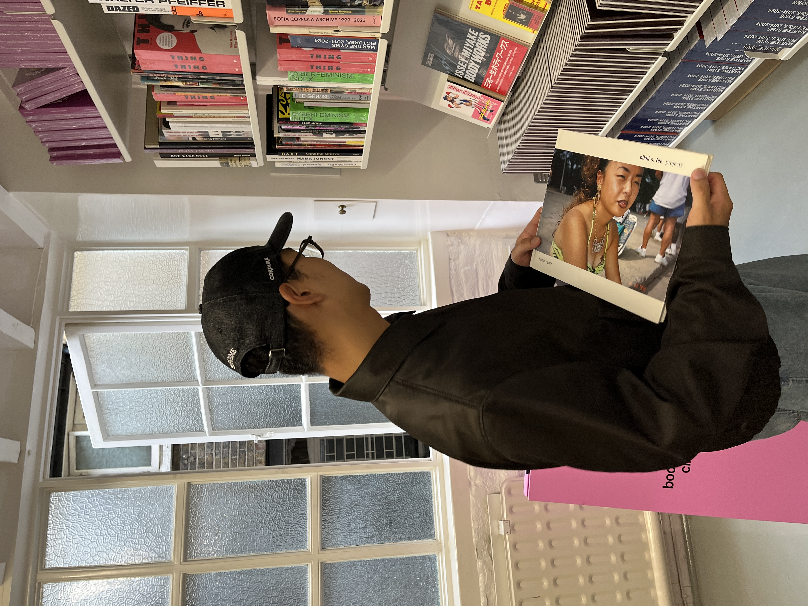
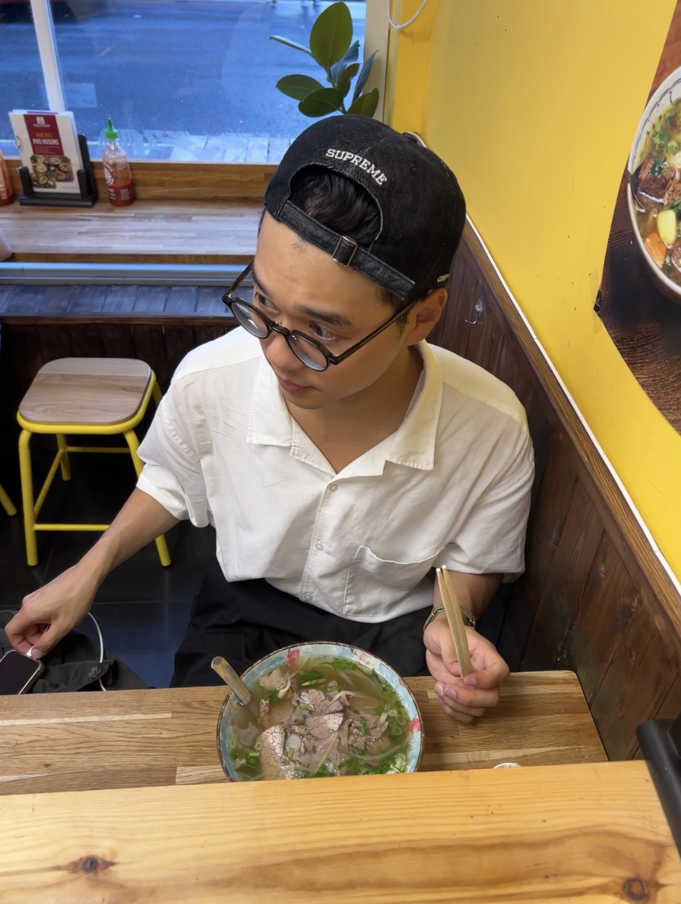
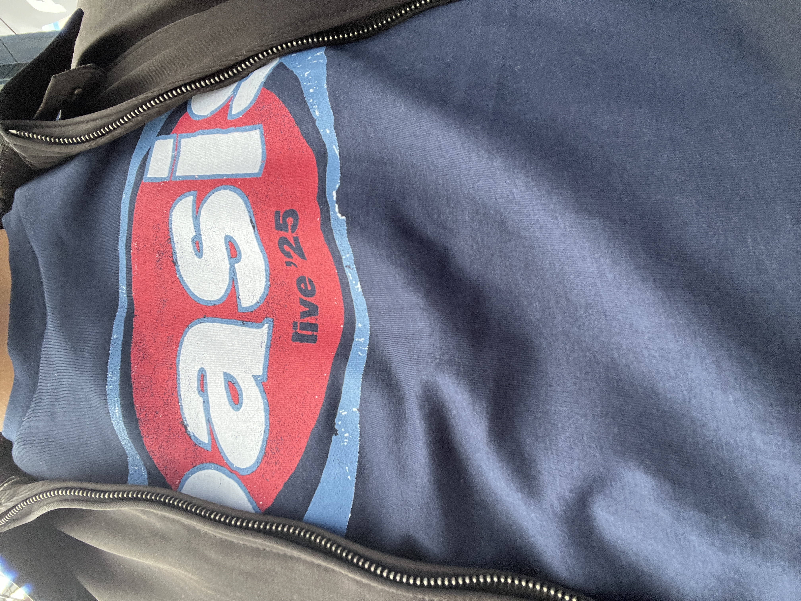
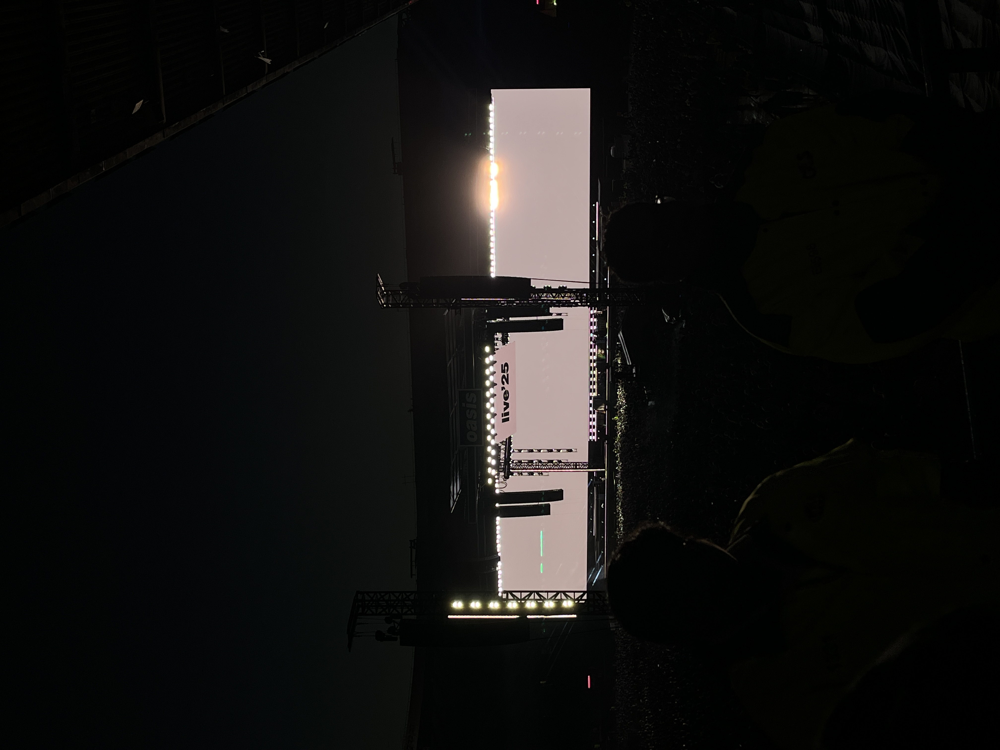

25년 여름 영국과 스코트랜드
프랑스 남부에서 휴가를 보내길 2주, 영국으로 휴가를 떠났다.
런던에서 커피를 마시고,
니키리 사진집을 찾아다니고,
쌀국수를 먹고,
오아시스를 찾아 스코트랜드로 향했다. 침대 없는 야간 열차로다가..
에든버러 전체가 배낭 여행자와 오아시스의 팬으로 북적였다.
피쉬 엔 칩스를 두둑히 사먹고 오아시스 공연을 맥주와 함께..




